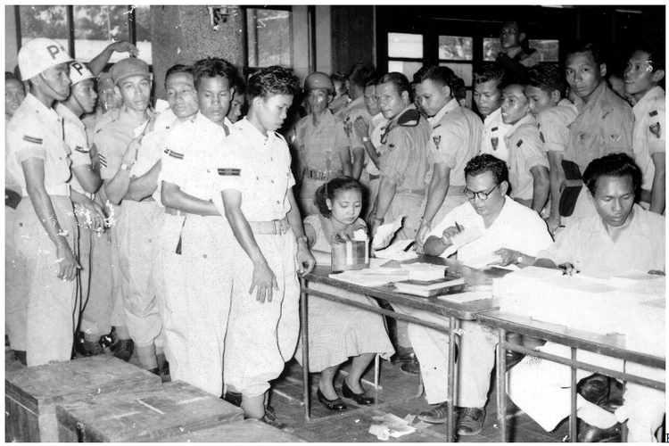
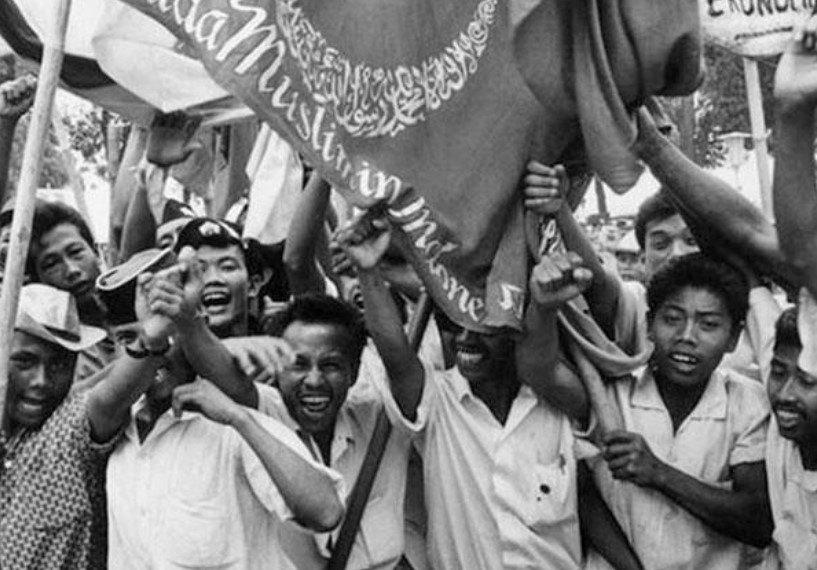
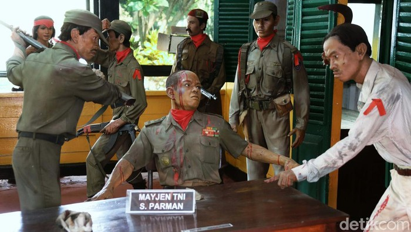
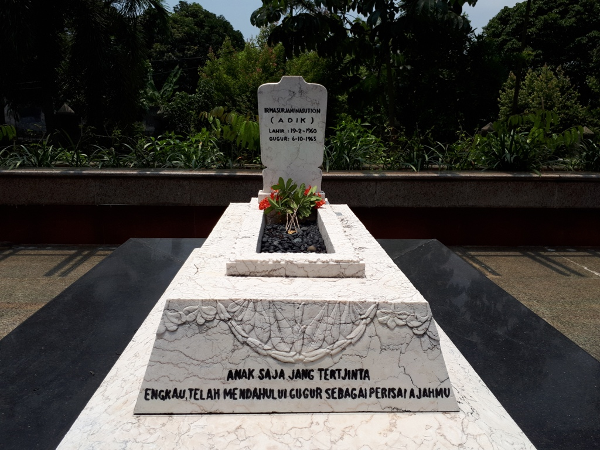

2.1.1 Proses Kembalinya Indonesia sebagai Negara Kesatuan

Dimulai dengan Belanda menginginkan pembentukkan negara-negara boneka sebagai hasil dari konferensi di Malino. Bertujuan untuk memperlemah keberadaan RI. Dengan terbentuknya negara boneka, RI bisa diadu domba, sebuah perwujudan politik Belanda, Devide Et Impera.
Negara boneka tersebut ada 6 negara bagian dan 9 daerah otonom:
- NEGARA BAGIAN
- Negara Indonesia Timur
- Negara Madura
- Negara Pasundan
- Negara Sumatra Timur
- Negara Sumatra Selatan
- Negara Jawa Timur
- DAERAH OTONOM
- Kalimantan Barat
- Kalimantan Timur
- Dayak Besar
- Banjar
- Kalimantan Tenggara
- Bangka
- Biliton (Belitung)
- Riau Kepulauan
- Jawa Tengah
Terjadilah perundingan antara pemerintah RI dan pemerintah RIS yang mengeluarkan hasil berikut:
- RIS dan RI sepakat membentuk negara kesatuan berdasarkan proklamasi kemerdekaan 17 Agustus 1945.
- RIS dan RI membentuk panitia bersama yang bertugas menyusun undang-undang dasar negara kesatuan.
Sampailah pada 17 Agustus 1950 negara RIS bubar dan terwujud kembali Negara Kesatuan Republik Indonesia (NKRI).
2.1.2 Pemilihan Umum Pertama RI 1955

Pemilu pertama memiliki dua tahap, 29 September 1955 untuk pemilihan anggota DPR dan 15 Desember 1955 untuk pemilihan anggota Konstituante. Dari 28 kontestan, 4 partai terkemuka adalah Masyumi, PNI, NU, dan PKI.
2.1.3 Dekrit Presiden 5 Juli 1959 dan Pengaruh yang Ditimbulkannya

Berawal ketika anggota Konstituante tidak melaksanakan tugasnya untuk membentuk UUD dikarenakan mementingkan partai masing-masing. Pada saat itu juga, di masyarakat mereka ingin UUD 1945 diberlakukan kembali.
Dilaksanakan pemungutan suara untuk memberlakukan kembali UUD 1945 dengan hasil bahwa Konstituante gagal memutuskan hasil perdebatan maka diputuskan reses.
Karena Konstituante gagal, terjadi pemberontakan di berbagai daerah dan terjadi ketidakstabilan negara disebabkan tidak memiliki pedoman konstitusi yang jelas.
Hal tersebut berakhir dengan Letjen A.H. Nasution melarang kegiatan politik.
Soekarno mengeluarkan dekrit yang diumumkan di sebuah upacara resmi di Istana Merdeka pada 5 Juli 1959 pkl 17.00 dengan isi:
- Pembubaran Konstituante
- UUD 1945 berlaku bagi segenap bangsa Indonesia
- Pembentukkan MPRS dan DPAS dalam waktu sesingkat-singkatnya
Pada saat ini, Indonesia memasuki era baru, yakni era Demokrasi Terpimpin. Sesuai UUD 1945, Demokrasi Terpimpin memiliki arti sama dengan sila ke-4 Pancasila. Akan tetapi disalahtafsirkan oleh pemerintah saat itu.
Soekarno melihat pengertian terpimpin sebagai seorang figur pimpinan yang dapat membuat keputusan tepat agar pemerintahan berjalan dengan baik. Akibatnya, kekuasaan berpusat di tangan presiden dan bukan lembaga legislatif.
Presiden Soekarno membentuk MPRS melalui Penetapan Presiden No.2 Tahun 1959. MPRS melakukan sidang dengan inti berikut:
- Sidang Umum 1 pada 10 November - 7 Desember 1960 menghasilkan Ketetapan MPRS Nomor I/MPRS/1960 yang menetapkan Manifesto Politik Republik Indonesia sebagai Garis-Garis Besar Haluan Negara. Lalu Ketetapan MPRS Nomor II/MPRS/1960 tentang Garis-Garis Pola Pembangunan Nasional Semesta Berencana Tahapan Pertama 1961-1969.
- Sidang Umum 2 pada 15-22 Mei 1963 menghasilkan Ketetapan MPRS III/MPRS/1963 tentang mengangkat Presiden Soekarno/Mandataris MPRS menjadi Presiden Seumur Hidup.
- Sidang Umum 3 pada 11-16 April 1965 menghasilkan Ketetapan MPRS V/MPRS/1965 mengenai pidato Soekarno berjudul: "Berdiri di atas kaki sendiri (berdikari)" sebagai pedoman revolusi dan politik luar negeri Indonesia.
2.1.4 Perjuangan Bangsa Indonesia Merebut Irian Barat

- PERJUANGAN MELALUI JALUR DIPLOMASI
- akhir Maret 1950, Indonesia dan Belanda mengadakan Konferensi Uni Indonesia-Belanda untuk membahas Irian Barat yang tidak menghasilkan awpapun mengenai penyerahan Irian Barat.
- Indonesia membubarkan Uni Indonesia-Belanda pada 10 Agustus 1954 melalui UU No. 13 tahun 1956 tertanggal 3 Mei 1956.
- Pada 4 Agustus 1956, pemerintah RI menolak mengakui hutang negara sebesar 3.661 miliar gulden.
- Dengan suasana anti-Belanda, diselenggarakanlah rapat pembebasan Irian Barat di Jakarta. Pemerintah RI melarang beredarnya terbitan dan film dengan bahasa Belanda. Dilarang juga KLM mendarat dan terbang di atas wilayah RI. Beserta semua perwakilan konsuler Belanda dihentikan.
- Karena perusahaan Belanda di Indonesia menguntungkan pihak Belanda dibanding kesejahteraan rakyat Indonesia, hal tersebut dihentikan juga.
- Pemerintah RI secara resmi memutuskan hubungan diplomatik dengan Kerajaan Belanda. Namun, tindakan tersebut belum cukup untuk Belanda menyerahkan Irian Barat.
- 5 April 1961, Belanda mendirikan negara Papua Barat. Tindakan Belanda dianggap tantangan oleh Indonesia. Pada 19 Desember 1961 Soekarno mengumandangkan TRIKORA di rapat raksasa di alun-alun utara Yogyakarta yang berisi:
- Gagalkan pembentukan Negara Papua buatan pemerintah Belanda Kolonial
- Kibarkan Sang Merah Putih di Irian Barat
- Bersiaplah mobilisasi umum guna mempertahankan kemerdekaan dan kesatuan tanah air dan bangsa
- Untuk mewujudkan Trikora, pemerintah membentuk Komando Mandala Pembebasan Irian Barat. Terjadi penyusupan ke Irian Barat yang ditangkap mata-mata Belanda yang memecahkan pertempuran di Laut Arafuru.
- Dalam pertempuran Laut Arafuru, kapal MTB Macan Tutul berhasil ditenggelamkan Belanda. Komodor Yos Sudarso (pimpinan kapal) gugur. Sehingga, beliau terkenal sebagai Pahlawan Trikora.
- Komando Mandala melakukan serangkaian operasi pendaratan di Irian Barat. Operasi infiltrasi ini membawa pasukan TNI dan sukarelawan di berbagai tempat.
- Elsworth Bunker diutus untuk menengahi perselishan Indonesia dan Belanda. Bunker mengajukan usul perdamaian yang berisi Belanda menyerahkan Irian Barat melalui badan pemerintahan PBB.
- Kedua belah pihak menyepakati Persetujuan New York yang berbunyi:
- Belanda menyerahkan Irian Barat kepada UNTEA paling lambat 1 Oktober 1962
- Pasukan Indonesia yang ada di Irian Barat dibawah UNTEA, sedangkan pasukan belanda berangsur-angsur dipulangkan.
- Bendera Indonesia dikibarkan di samping bendera PBB sejak 31 Desember 1962
- Pemerintah RI resmi menerima pemerintahan atas Irian Barat dari UNTEA srlambat-lambatnya pada 1 Mei 1963
- Pemerintah RI menyelenggarakan pPepera paling lambat akhir tahun 1969.
- Pada 1 Mei 1963 berlangsung upacara serah terima Irian Barat kepada Pemerintah RI. Setelah Pepera dilaksanakan, Dewan Musyawarah Pepera mengumumkan rakyat Irian Jaya memutuskan Irian Jaya tetap bagian dari RI. Hasil tersebut dibawa kepada Duta Besar Ortis Sanz untuk dilaporkan ke Sidang Umum PBB ke-24. Sejak itu, Irian Jaya menjadi wilayah RI secara de jure.

Tampak Perangko UNTEA pada zaman Belanda-Irian Barat
2.1.5 Gejolak Keamanan Dalam Negeri yang Mengancam Disintegrasi Bangsa
- DI/TII

- Sekarmaji Marijan Kartosuwiryo, seorang pemimpin DI/TII bercita-cita mendirikan negara Islam di Indonesia yang bukan merupakan bagian dari RI.
- 7 Agustus 1949, Kartosuwiryo memproklamasikan berdirinya NII. Gerakan tersebut dinamakan Darul Islam (DI) dan tentara yang mendukungnya adalah Tentara Islam Indonesia (TII). Maka dinamakan DI/TII.
- Pengaruh DI/TII sampai ke Jawa Tengah oleh Amir Fatah, Sulawesi Selatan oleh Kahar Muzakar, Kalimantan Selatan oleh Ibnu Hajar, dan Aceh oleh Tengku Daud Bereureueh
- 4 Juni 1962, kesatuan Divisi Siliwangi menangkap Kartosuwiryo, keluarganya, serta pengawalnya. Operasi TNI ini menghentikan pemberontakan DI/TII di berbagai daerah Indonesia.
- APRA, Andi Azis, RMS, PRRI, Permesta

- Di Bandung, ex-KNIL membentuk APRA (Angkatan Perang Ratu Adil) dipimpin oleh Raymond Westerling. APRA membunuh tiap anggota TNI yang dijumpai.
- Terjadi gangguan keamanan yang dimulai oleh Andi Azis dan pengikutnya. Muncul Republik Maluku Selatan yang didirikan Dr. Soumokil untuk mengacaukan keamanan.
- Muncul juga pemberontakkan PRRI dipimpin Letkol Achmad Husein.
- Panglima Tentara dan Teritorium VII Letkol Ventje Sumual memproklamasikan berdirinya Piagam Perjuangan Semesta (Permesta)
- Operasi APRI berhasil menguasai daerah Permesta. Hingga akhirnya, Permesta menyerahkan diri.

- Aksi yang dijalankan PKI berupa propaganda anti pemerintah, menculik dan membunuh, anarki, dan pemogokan.
- Salah satu tokoh komunis, Musso, yang lama di Moskow Uni Soviet, mengambil alih pimpinan PKI. Tindakan Musso meneror rakyat, mengadu domba TNI, bahkan menjelekkan kepemimpinan Soekarno-Hatta.
- Negara RI dilanda krisis sosial politik dan ekonomi nasional. PKI melihat hal tersebut sebagai peluang memperluas pengaruhnya. Ada doktrin NASAKOM (Nasional, Agama, dan Komunis). Yang membuat kedudukan PKI lebih tinggi.
- Pertengahan Agustus 1960, PKI memengaruhi pemerintah agar membubarkan Masyumi dan PSI, beserta Manifesto Kebudayaan (konsep kebudayaan mengusung humanisme universal).
- PKI menganggap Angkatan Darat sebagai penghalang utama Indonesia menjadi komunis.
- Pada 30 September 1965, PKI melancarkan perebutan kekuasaan. Pada 1 Oktober 1965, terjadi penculikkan dan pembunuhan enam perwira tinggi Angkatan Darat:
- Letnan Jenderal Ahmad Yani
- Mayor Jenderal R. Suprapto
- Mayor Jenderal S. Parman
- M.T. Haryono
- Brigadir Jenderal D.I. Panjaitan
- Brigadir Jenderal Sutoyo Siswomihardjo
- Jenderal Abdul Haris Nasution (sasaran utama) meloloskan diri, akan tetapi putrinya, Ade Irma Suryani tidak selamat. Lettu Pierre Andreas Tendean dan Brigadir Polisi Sasuit Tubun juga tewas.

Peristirahatan terakhir Ade Irma Suryani. - Di Lubang Buaya, pemberontak PKI menyiksa dan membunuh perwira AD kemudian memasukkan mayat mereka ke dalam sumur kering.

- PKI menguasai studio RRI dan kantor telekomunikasi dan mengeluarkan pengumuman Gerakan 30 September.
- PKI melakukan gerakan ditujukan pada anggota Dewan Jenderal yang akan mengadakan kudeta pada pemerintah.
- Mengeluarkan dekrit pembentukan Dewan Revolusi.
- Mendemisioner Kabinet Dwikora
- Menghapus pangkat Jenderal dan pangkat Letnan Kolonel.
- PKI melakukan lagi pembunuhan Kolonel Katamso dan Letnan Kolonel Sugiono karena menolak berhubungan dengan Dewan Revolusi.